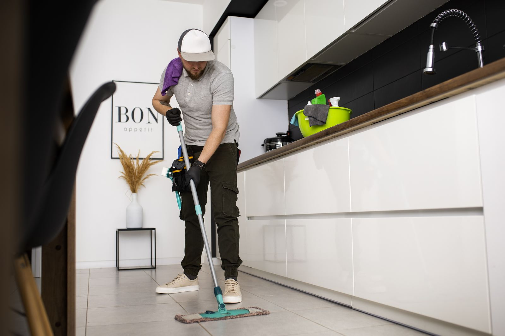

House Removals
Full-service home moves across Ryedale, the Moors and the Vale of York — from one-bed cottages to large farmhouses.
Find out moreCareful, friendly removals from our base in Helmsley — covering Ryedale, the North York Moors, York and the coast, everywhere within 30 miles.
From a single sofa to a full farmhouse, an office to a move across the country — plus the packing, storage and cleaning that go with it.
Full-service home moves across Ryedale, the Moors and the Vale of York — from one-bed cottages to large farmhouses.
Find out more
Flexible, fully-insured small moves, single items, student moves and flat moves — two-man crews available.
Find out more
Office, shop, surgery and workshop relocations planned to keep downtime to a minimum — evenings and weekends available.
Find out moreMoving out of Yorkshire? Door-to-door moves to anywhere in the UK, plus European moves handled with trusted partners.
Find out morePianos, antiques, artwork, grandfather clocks, gym equipment and heavy furniture moved with the right kit and know-how.
Find out more
Full or part packing by our crew, fragile-only packing, and boxes, tape and bubble wrap delivered to your door.
Find out more
Beds, wardrobes, tables and flat-pack taken apart, moved safely and rebuilt in your new home — fixings bagged and labelled.
Find out more
Safe, organised and affordable short or long-term storage — perfect between completion dates, during renovations or for business stock.
Find out more
Move-out, end-of-tenancy and move-in cleans so you can hand over the keys and arrive somewhere fresh.
Find out moreMoving can’t be made much easier than this.
We survey your home in person or by video, then send a clear fixed-price quote. Once booked, we deliver boxes and help plan every detail — including packing if you’d like us to do it.
On the day, our uniformed crew protects your floors and doorways, wraps your furniture and loads the van methodically, so everything comes off in the right order.
We unload room by room, rebuild beds and furniture where you want them, and take away the packing materials. All that’s left to do is put the kettle on.
Ryedale Removals is a Helmsley-based removal company serving the towns, villages and farms of Ryedale and the surrounding area. We’re big enough to handle large house and office moves, and small enough that you’ll speak to the same friendly team from your first call to the last box.
Our mission is simple: a move that is careful, on time and on budget, with no surprises on the day.
From the moors to the coast and down into the Vale of York, we know the roads, the villages and the access before we arrive.
Completion dates that don’t line up? Renovating or downsizing? We collect, inventory and store your belongings securely, then deliver them to your new home when you’re ready.
We arrive when we say we will and keep you updated throughout the day.
Blankets, covers and floor protection on every job — your belongings and home stay safe.
A fixed price agreed in writing before the move, with nothing added on the day.
Based in Helmsley, we know Ryedale’s lanes, villages and market towns inside out.
We’re based in Helmsley and cover everywhere within 30 miles — including York, Malton, Pickering, Kirkbymoorside, Thirsk, Easingwold, Northallerton, Stokesley, Ripon, Scarborough and Whitby. We also do long-distance moves to anywhere in the UK and arrange European moves.
Every move is different, so we give a free, fixed-price quote after a quick survey (in person or by video). The price depends on the volume of belongings, access at both ends, the distance and any extras like packing or storage.
Yes. Our moves include goods-in-transit insurance and we hold public liability insurance. Ask us for details of the cover and any options to increase it for high-value items.
Four to six weeks is ideal, particularly for Fridays, month ends and the summer. We can often help at shorter notice — just call.
Light clothing can usually stay in chests of drawers, and we bring wardrobe boxes for hanging clothes. Heavy items, liquids and anything fragile should be packed separately.
Get a free, no-obligation fixed-price quote — usually within one working day.